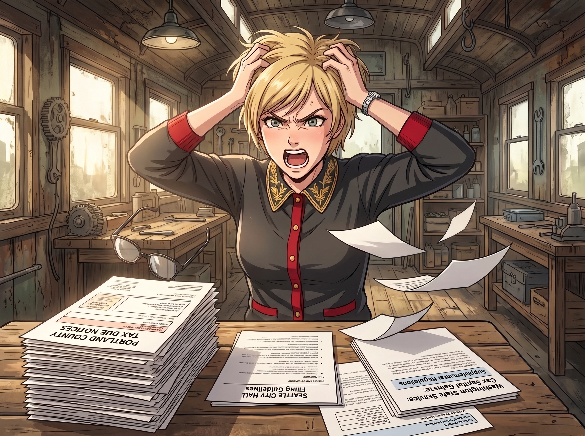
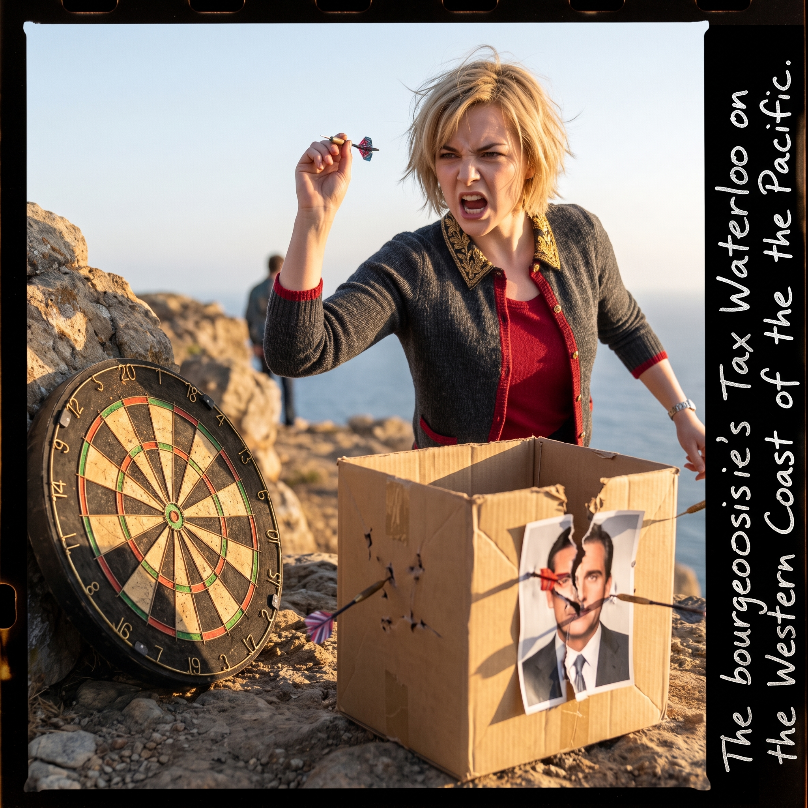

稅務核聚變


週二下午，二號車廂長桌前爆發了一場名媛的稅務核聚變。
Victoria 面前攤著厚厚一疊來自波特蘭地方縣的補稅催繳單、西雅圖市政廳的申報指引，以及華盛頓州稅務局關於資本利得特許稅的最新補充條例。
名媛摘下眼鏡扔在桌上，氣得胸口劇烈起伏，十指插進頭髮裡，罕見地在長桌前開啟了極限抓狂模式：「這群把腦子捐給了西雅圖雨水的政客！一邊口口聲聲說免個人所得稅，一邊把資本利得硬生生發明成特許交易稅！波特蘭那幫官僚甚至還在追繳去年那筆微不足道的專項基金附加稅！這根本不是公共財政，這是持牌的合規搶劫！！」
一、三人的專業盲區
面對滿桌的條例、穿透實體信託與抵免額度，另外三人的專業技能瞬間陷入了徹底的無效化。
Chloe 咬著冰棒棍，試圖用機械師思維幫忙：「大富婆，要不我用重型等離子切割機，去把波特蘭稅務局大樓的承重鋼梁切了？或者我把那台發票打印機扔進車床裡磨成鐵屑？」
Victoria 翻了個巨大的白眼：「謝謝妳，Price。除了讓 Chase 家族再多背十項聯邦重罪指控之外，對我的抵稅額度沒有任何幫助。」
Max 拿著放大鏡看著稅單上的小字，試圖用藝術視角解讀：「Victoria……如果我們把這些催繳單全部當成相紙，泡進高濃度定影液裡洗掉墨水，算不算某種先鋒行為藝術？」
Victoria 痛苦地揉著太陽穴：「那叫銷毀法律文書，Caulfield。妳的下半生將在聯邦監獄裡專職給獄警拍證件照。」
Kate 握住名媛冰涼的手，眼神無比真誠：「Victoria，聖經上說凱撒的物當歸給凱撒……我們要不要向教區申請一份非營利慈善豁免？」
Victoria 絕望地靠在椅背上：「西雅圖的稅務局比羅馬帝國的稅吏兇殘一萬倍，Marsh。」
二、奇蹟般的非專業安撫與降壓防線
雖然在稅法上幫不上忙，但三人隨即啟動了二號車廂專屬的名媛暴走急救體系，用最接地氣的方式將瀕臨崩潰的 Victoria 拉了回來。
Kate 迅速泡了一壺特調的薰衣草迷迭香熱茶，點燃了新基地自製的雪松香薰，隨後溫柔地站在 Victoria 身後，用帶有洋甘菊精油的指尖輕輕替名媛按揉緊繃的肩頸與太陽穴。溫熱的草本香氣讓 Victoria 狂躁的神經在一分鐘內降溫了大半。
Chloe 把一張印著官員大頭貼的廢紙箱立在懸崖邊，扔給 Victoria 一把沉重的老式飛鏢：「來，別憋著！當資本家不就是為了砸錢出氣嗎？每扎中紅心一次，本工坊免費給妳車削一個純黃銅鎮紙！」名媛一邊咬牙切齒地罵著「愚蠢的行政干預」，一邊連甩十支飛鏢，將紙箱扎得稀爛，積壓的怨氣瞬間宣洩了大半。
Max 悄悄後退兩步，抓拍下名媛頭髮微亂、手持飛鏢怒目圓睜的瞬間，隨後在底片邊緣寫下註腳：資產階級在太平洋西岸遭遇的稅務滑鐵盧。看著照片裡自己滑稽又鮮活的模樣，Victoria 甚至忍不住冷笑了一聲。
三、暴怒後的反擊：名媛的降維避稅佈局
在情緒徹底被同伴撫平後，冷靜下來的 Victoria 重新展現了頂級商科名媛的狠辣手腕。
她優雅地喝光了 Kate 遞過來的熱茶，將飛鏢隨手扔回桌上，重新戴上金絲眼鏡，嘴角勾起一抹冰冷的弧度：「既然他們想在合規邊緣玩文字遊戲，那就別怪本小姐用家族法務團隊教他們做人。」
名媛飛速在鍵盤上敲下指令：將二號車廂正式註冊為由 Chase 基金會全資支持的西海岸瀕危重工業與手工暗房遺產保護信託，依法享受特種文化機構的房產與增值稅抵扣；將 Chloe 新採購的車床、Max 的大型暗房設備全部列為高新工藝實驗器材，全額申報設備折舊與研發成本，直接把應稅基數砍掉四成；並簽署最後一份資產剝離協議，將波特蘭的所有殘留業務連根拔起，正式完成向華盛頓州海邊的完全稅務遷徙。
夕陽再次灑在二號車廂平靜的長桌上。
剛才還殺氣騰騰的稅單被整齊地收進了檔案夾，Chloe 坐在地板上嚼著冰棒，Kate 正笑瞇瞇地給花草噴水，Max 在長桌另一端整理著手帳。
Victoria 優雅地靠在沙發上，晃著手中的冰咖啡，看著窗外安寧無波的海灣，長長地舒了一口氣。無論體制與現實多麼荒誕，只要回到這節車廂裡，她們總能用彼此的陪伴、瘋狂與智慧，將一切風暴化險為夷。